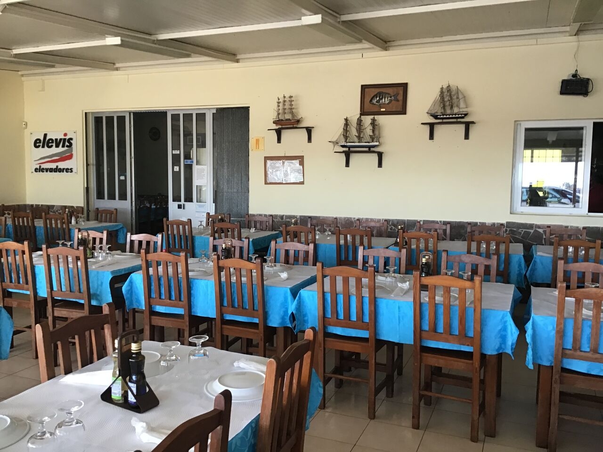

Sobre nós
O ambiente do restaurante é acolhedor e familiar, ideal para um almoço descontraído. A decoração reflete a cultura marítima da região, criando uma atmosfera agradável para os visitantes. Os clientes frequentemente elogiam a qualidade dos pratos e o atendimento amigável. Se você está em Olhão e deseja saborear um excelente peixe assado, o Américo é uma escolha imperdível.
